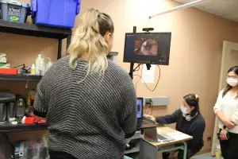

Projects
Clinical Trials
Bariatric surgery for the Reduction of cArdioVascular Events (BRAVE) randomized controlled trial
Surgical Simulation
A Novel Surgical Simulator for Hand-Sewn Bowel Anastomoses in Difficult Anatomical Regions

Eye-hand Coordination in Endoscopy
Developing an Effective Teaching Model for Central Venous Catheterization Based on Eye-Hand Coordination Evidence
Research with Indigenous Communities
Incorporating Indigenous Healing and Wellness Practices into a Bariatric Surgery Program
Developing Guidelines for the Ethical Conduct of Surgical Research Involving Indigenous Peoples in Manitoba: A Collaborative Initiative
Other Projects
Health Care Encounters and Pharmaceutical Utilization in Bariatric Surgery: A Provincial Administrative Data Analysis
Post-operative Bariatric Surgery Follow-up: Comparison of In-person Versus Telephone Follow-up During the COVID-19 Pandemic
Funding Support
Current Funding Support
- A Randomized control trial comparing the glycemic and cardiovascular Efficacy of metabolic Surgery vs optimal mEdical Therapy in patients with type 2 diabetes and CardioVascular Disease: RESET-CVD. The Canadian Institutes of Health Research (CIHR)
- Improving the Outcomes of Peritoneal Dialysis (PD) Catheter Insertion. The Canadian Institutes of Health Research (CIHR)
- A novel surgical simulator for hand-sewn bowel anastomoses in difficult anatomical regions. Hardy K, Vergis A, Penta R, He W. University of Manitoba Department of Surgery GFT Grant. ($15,000, 2023)
- Developing an effective teaching model for central venous catheterization based on eye-hand coordination evidence. Robertson R, He W, Hardy K, Vergis A, Gillman L. University of Manitoba Department of Surgery GFT Grant. ($15,000, 2023)
- Eye-Hand Coordination in Endoscopy. Vergis A, He W, Hardy K, Gillman L. University of Manitoba, Department of Surgery GFT Research Grant ($15,000, 2022-2024).
- Developing Guidelines for the Ethical Conduct of Surgical Research Involving Indigenous Peoples in Manitoba: A Collaborative Initiative. Hardy K, Morris M, Fowler-Woods M, Fowler-Woods A, He W, Vergis A. University of Manitoba, Department of Surgery GFT Research Grant ($15,000, 2022-2024).
- Implementation of multidisciplinary, national Delphi derived guidelines for endoscopic documentation of complex colorectal neoplasms in Manitoba. Helewa R, Singh H, Johnson G, Hyun E, Roy H, Moffatt D, Vergis A. University of Manitoba, Department of Surgery GFT Research Grant ($15,000, 2022-2024).
- Incorporating Indigenous healing and wellness practices into a bariatric surgery program. Hardy K, Fowler M, Fowler-Woods A, Hatala A, He W, Vergis A. The Canadian Institutes of Health Research (CIHR), Project Grant ($470,475, 2021-2025).
- Feasibility and Acceptability of Direct Peritoneal Resuscitation in the Management of the Open Abdomen. Gillman L, Ziesmann M, Vergis A. University of Manitoba, Department of Surgery Research Grant ($15,000, 2021-2023).
Past Funding Support
- Eye-hand coordination in surgical skill acquisition. Vergis A, He W, Hardy K, Gillman L. Small Research Equipment Funding (SREF) Program ($25,000, 2021-2022).
- A decolonizing approach to the incorporation of traditional Indigenous ways of healing into Manitoba’s bariatric program. Hardy K, Vergis A, Fowler-Woods M, Woods A, Hatala A, He W. Research Manitoba-Victoria General Hospital Foundation Research Operating Grant ($34,691, 2021-2022).
- Post-operative bariatric surgery follow-up: comparison of in-person versus telephone follow-up during the COVID-19 pandemic. Vergis A, Gu J, He W, Hardy K. VGH Foundation ($2,000, 2020-2021).
- Establishment and Implementation of National Guidelines for Endoscopic Documentation and Localization of Colorectal Lesions: Streamlining the Management of Complex Neoplasms. Helewa R, Johnson G, Park J, Singh H, Vergis A. University of Manitoba, Department of Surgery Research Grant ($15,000, 2019-2021).
- Sequential Sharing Circles as a decolonized approach to investigate the experiences of Manitoba’s urban Indigenous population living with obesity and type 2 diabetes mellitus and awareness of bariatric surgery. Hardy K, Vergis A, Fowler M, Fowler-Woods A, Shingoose G, Zmudzinski M, Schacter I. University of Manitoba, Department of Surgery Research Grant ($15,000, 2019-2021).
- Operative Reporting in Transanal Endoscopic Microsurgery (TEM): Development of Quality Indicators and a Synoptic Reporting Platform. Vergis A, Helewa R, Robertson R, Hochman D, Park J. University of Manitoba, Department of Surgery Research Grant ($12,405, 2018-2020).
- Assessment of biomarkers associated with obesity and bariatric surgery outcomes: A feasibility study for the creation of a bariatric surgery biobank. Hardy K, Sokoro A, McGavock J, Duhamel T, Vergis A, He W, Dufault B. University of Manitoba, Department of Surgery Research Grant ($15,000, 2018-2020).
- Health care encounters and pharmaceutical utilization in bariatric surgery: A provincial administrative data analysis. Vergis A, Clouston K, Hardy K. University of Manitoba, Department of Surgery Research Grant ($15,000, 2018-2020).
- The metabolic impact of bariatric surgery on Manitoba’s urban indigenous population. Hardy K, Clouston K, Vergis A, Schacter I. Dr. Paul H.T. Thorlakson Foundation Fund ($29,963, 2018).
- The metabolic impact of bariatric surgery on Manitoba’s urban indigenous population. Vergis A, Metcalfe J, Hardy K. University of Manitoba, Department of Surgery Research Grant ($15,000, 2017-2019).
- Teaching laparoscopic suturing and knot-tying skills: A randomized controlled study comparing remote Merged Virtual Reality instruction to in-person expert feedback. Vergis A and Lowry B. University of Manitoba, Department of Surgery Research Grant ($15,000, 2017-2019).
- An Integrated Surgical and Physical Activity Program to Identify Bariatric Surgery Quality Indicators and Evaluate Patient Outcomes and Quality of Life. Hardy K, Chambers Clouston K, Duhamel T, Vergis A. VGH Foundation ($9,535, 2016).
- Effect of an Educational Intervention on Endoscopic Adenoma Detection Rate. Hammond S, Vergis A, Hochman D. American Society of Colon and Rectal Surgeons Operating Grant ($20,000, 2016-2018).
- The implementation of a novel platform to improve communication among health care providers. Esmail A and Vergis A. National Research Council of Canada Industrial Research Assistance Program ($20,000, 2015).
- Does the STOP-bang questionnaire predict postoperative hypoxemic events in bariatric surgery patients? Hardy K and Vergis A. University of Manitoba, Department of Surgery Research Grant ($13,328, 2015-2017).
- The impact of a preoperative exercise program on fitness outcomes following bariatric surgery. Hardy K and Vergis A. Manitoba Medical Service Foundation/The Victoria General Hospital Foundation ($22,000, 2014-2015).
- The implementation of a novel platform to improve communication among health care providers. Esmail A and Vergis A. Province of Manitoba, Commercialization and Support for Business Program ($42,200, 2014).
- The impact of a preoperative exercise program on fitness outcomes following bariatric surgery. Hardy K and Vergis A. University of Manitoba, Department of Surgery Research Grant ($13,480, 2013).
- Validation of automated metrics of the Vimedix ultrasound simulator. Gillman L, Vergis A, Unger B, Kirkpatrick A, Park J. University of Manitoba, Department of Surgery Research Grant ($15,000, 2013).
- Design and validation of a unique endoscopy simulator using a commercial video game console. Park J, Unger B, Vergis A, Gillman L. University of Manitoba, Department of Surgery Research Grant ($16,000, 2013-2015).
- Design and validation of a unique endoscopy simulator using a commercial video game console. Park J, Unger B, Vergis A, Gillman L. Canadian Society of Colon and Rectal Surgeons Operating Grant. ($10,000, 2013).
- Metcalf A, Vergis A, Hardy K. University of Manitoba, Department of Surgery Research Grant ($15,000, 2012-2013).
- Standardized Assessment of Ultrasound Image Acquisition. Gillman LM, Kirkpatrick AW, Vergis A, Blaivas M, Park J. University of Manitoba, Department of Surgery Research Grant ($15,000, 2012-2014).
- Optimizing Practice Schedules for Learning Basic Skills on a Computer-Based Laparoscopic Simulator. Park J, Vergis A, Unger B. Canadian Association of General Surgeons (CAGS) Ethicon Research Grant ($25,000, 2011-2013).
- Do Fundamentals of Laparoscopic Surgery (FLS) and LapSim evaluation metrics predict intra-operative performance? Vergis A, Hardy K, Steigerwald S, Park, J. University of Manitoba, Department of Surgery Research Grant ($20,000, 2011-2012).
- The effect of blocked versus random task practice schedules on the acquisition, retention, and transfer of surgical skills. Park J and Vergis A. Royal College of Physicians and Surgeons of Canada (RCPSC) Medical Education Research Grant ($25,000, 2010-2011).
- The Dictated Operative Note. Vergis A, Gillman L, Taylor M, Park J. RCPSC Medical Education Research Grant ($8,000, 2006-2007).
- Structured Assessment Format for Evaluating Operative Reports in General Surgery. Vergis A and Taylor M. R. Samuel McLaughlin Foundation ($25,000, 2005-2006).